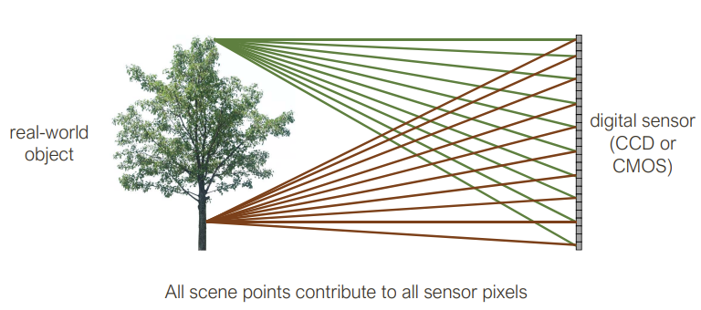
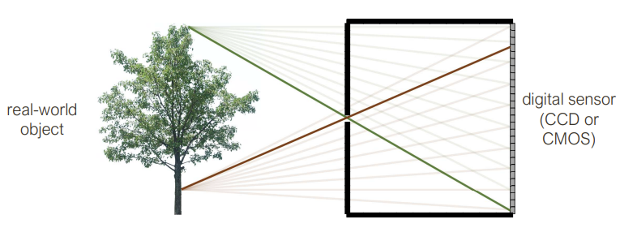

Image Formation, Cameras, and Lenses
Image formation depends on
- Lighting conditions
- Scene geometry
- Surface properties
- Camera optics
- Sensor properties
Image Processing Pipeline
The sequence of image processing operations applied by the camera’s image signal processor (ISP) to convert a RAW image into a regular JPG/PNG.
- Lens
- CFA
- Analog Front-end → RAW image (mosaiced, linear, 12-bit)
- White balance
- CFA demoisaicing
- Denoising
- Colour transforms
- Tone reproduction
- Compression → final RGB image (non-linear, 8-bit)
Examples
Reflection
Surface reflection depends on viewing and illumination direction along with the Bidirectional Reflection Distribution Function:
All angles are spherical coordinates w.r.t. the normal line of the surface.
A Lambertian (matte) surface is one which appears the same brightness from all directions. A mirror (specular) surface is one where all incident light is reflected in one direction
Cameras
All scene points contribute to all sensor pixels
As a result, the image is really blurry.
Pinhole camera
The image here is flipped, but no longer blurry. Roughly, each scene point contributes to one sensor. Pinhole camera means you need to get the right size of pinhole. If the pinhole is too big, then many directions are averaged, blurring the image. If the pinhole is too small, then diffraction becomes a factor, also blurring the image.
A few perspective ‘tricks’ arise out of the pinhole
- Size is inversely proportional to distance
- Parallel lines meet at a point (vanishing point on the horizon)
Side note, pinhole cameras are really slow because only a small amount of light actually makes it through the pinhole. As a result, we have lenses
Lenses
The role of a lens is to capture more light while preserving, as much as possible, the abstraction of an ideal pinhole camera, the thin lens equation
where is the focal point, is the distance to the image plane, and is the distance to the object.
Focal length can be thought of as the distance behind the lens where incoming rays parallel to the optical axis converge to a single point.
Different effects can be explained using physics phenomena. Vignettes are simply light that reaches one lens but not the other in a compound lens. Chromatic aberration happens because the index of refraction depends on wavelength of the light so not all colours can be in equal focus.
Similarities with the human eye
- pupil is analogous to the pinhole/aperture
- retina is analogous to the film/digital sensor
Weak Perspective
Only accurate when object is small/distant. Useful for recognition
Orthographic Projection
Perspective Projection
Image as functions
Grayscale images
2D function where the domain is and the range is
Point Processing
Apply a single mathematical operation to each individual pixel
Linear Filters
Let be an digital image. Let be the filter or kernel. For convenience, assume is odd and . Let , we call the half-width.
For a correlation, we then compute the new image as follows:
For a convolution, we then compute the new image as follows:
A convolution is just the correlation with the filter rotated 180 degrees. We denote a convolution with the symbol.
In general,
- Correlation: measures similarity between two signals. In our case, this would mean similarity between a filter and an image patch it is being applied to
- Convolution: measures the effect one signal has on another signal
Each pixel in the output image is a linear combination of the central pixel and its neighbouring pixels in the original image. This results in computations. When , then this is a
Low pass filters filter out high frequences, high pass filters filter out low frequencies.
Properties of Linear Filters
- Superposition: distributive law applies to convolution. Let and be digital filters. Then
- Scaling. Let be a digital filter and let be a scalar.
- Shift invariance: output is local (doesn’t depend on absolute position in image)
Characterization Theorem: Any operation is linear if it satisfies both superposition and scaling. Any linear, shift-invariant operation can be expressed as a convolution.
Non-linear filters
- Median Filter (take the median value of the pixels under the filter), effective at reducing certain kinds of noise, such as impulse noise (‘salt and pepper’ noise or ‘shot’ noise)
- Bilateral Filter (edge-preserving filter). Effectively smooths out the image but keeps the sharp edges, good for denoising. Weights of neighbour at a spacial offset from the center pixel given by a product . We call the first half of the product the domain kernel (which is essentially a Gaussian) and the second half the range kernel (which depends on location in the image).
- ReLU. for all , otherwise.
Sampling
Images are a discrete (read: sampled) representation of a continuous world.
An image suggests a 2D surface which can be grayscale or colour. We note that in the continuous case that
is a real-valued function of real spatial variables, and . It is bounded above and below, meaning where is the maximum brightness. It is bounded in extent, meaning that and do not span the entirety of the reals.
Images can also be considered a function of time. Then, we write where is the temporal variable. We can also explicitly state the dependence of brightness on wavelength explicit, where is a spectral variable.
We denote the discrete image with a capital I as . So when we go from continuous to discrete, how do we sample?
- Point sampling is useful for theoretical development
- Area-based sampling occurs in practice
We also quantize the brightness into a finite number of equivalence classes. These values are called gray-levels
Typically, giving us
Is it possible to recover from ? In the case when the continuous is equal to the discrete, this is possible (e.g. a completely flat image). However, if there is a discontinuouty that doesn’t fall at a precise integer, we cannot recover the original continuous image.
A bandlimit is the maximum spatial frequency of an image. The audio equivalent of this is audio frequency, the upper limit of human hearing is about 20kHz which is the human hearing bandlimit.
Aliasing is the idea that we don’t have have enough samples to properly reconstruct the original signal so we construct a lower frequency (fidelity) version.
We can reduce aliasing artifacts by doing
- Oversampling: sample more than you think you need and average
- Smoothing before sampling: reduce image frequency
This creates funky patterns on discrete images called moire patterns. This happens in film too (temporal aliasing), this is why wheels sometimes look like they go backwards.
The fundamental result (Sampling Theorem): For bandlimited signals, if you sample regularly at or above twice the maximum frequency (called the Nyquist Rate), then you can reconstruct the original signal exactly.
- Oversampling: nothing bad happens! Just wasted bits.
- Undersampling: things are missing and there are artifacts (things that shouldn’t be there)
Shrinking Images
We can’t shrink an image simply by taking every second pixel
Artifacts will appear:
- Small phenomena can look bigger (moire patterns in checkerboards and striped shirts)
- Fast phenomena can look slower (wagon wheels rolling the wrong way)
We can sub-sample by using Gaussian pre-filtering (Gaussian blur first then throw away every other column/row). Practically, for ever image reduction of a half, smooth by